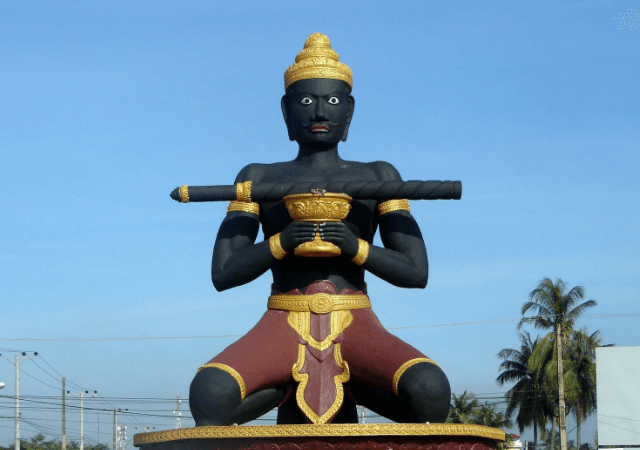

- Siem Reap
- Pailin
- Battambang
- Pursat
- Banteay Meanchey
- Oddar Meanchey
- Preah Vihear
- Kampong Thom
- Kampong Chhnang
- Kampongcham
- Stung Treng
- Ratanakiri
- Mondulkiri
- Kratie
- Tbongkhmum
- Preyveng
- Svay Rieng
- Kandal
- Phnom Penh
- Takeo
- Kampong Speu
- Kampot
- Kep
- Preah Sihanouk
- koh kong


Battambang Travel Guides
General Information
Battambang is Cambodia's second-largest city and the capital of Battambang Province, which was founded in the 11th century. It is the former capital of Monton Kmer and lies in the heart of the Northwest of Cambodia. Until the war years, in which almost every infrastructure was destructed it was the leading rice-producing province of the country.
The name Battambang or Batdambang, literally means "loss of stick" referring to a legend of the Preah Bat Dambang Kranhoung (Kranhoung Stick King). The population is nowadays around 250,000 people . It's a riverside town, home to some of the best-preserved, French colonial architecture in the country.
Until recently Battambang was off the map for road travellers, but facilities have recently been improved and it makes a great base for visiting the nearby temples, such as Phnom Banon and Wat Ek Phnom, as well as the closedby villages.
It's a secondary hub on the overland route between Thailand and Vietnam, and if the National Highway No 6 from Poipet to Siem Reap is ever upgraded it'll become an even smaller hub. The network of charming old French shop houses clustered along the riverbank is the real highlight here, and there are a number of Wats scattered around the town.
The small museum has a collection of Angkorian-era artifacts, and beyond the town there's a number of hilltop temples, yet more Wats and a pretty large lake. One of the more famous hills is Phnom Sampeau (Ship Hill) with the notorious killing caves.
Battambang did not give way to the Khmer Rouge movement after the fall of Phnom Penh, but it?s been in the centre of the ongoing government Khmer Rouge conflict ever since the Vietnamese invasion in 1979 pushed the genocidal regime out of Phnom Penh and to the Northwest. Until the surrender deal of Ieng Sary (Khmer Rouge number three man based in Pailin),Battambang was the Khmer Rouge stronghold in the region.
In the earlier history Battambang flip-flopped back and forth between Thailand (called Siam before their 20th-century renaming) and Cambodia. It's been a part of Thailand most of the time since the 15th century, with Cambodia regaining control (more specifically due the French) in 1907. The Thais grabbed it again, with Japanese assistance, in 1941 and kept the region in their camp until the World War II years in 1947.
The Allied Forces helped persuade the Thais that the region was originally part of ancient Cambodia and the world community would not take kindly to the Thais holding onto it further. Like the rest of the Northwest, there is still a lot of Thai influence apparent. The main currency is still the Thai Baht and many people are able to converse in Thai. But the area is very Khmer, with ancient Khmer ruins scattered around, and even the ways of life are much more similar to the rest of Cambodia than to Thailand.
Battambang city is a peaceful and pleasant place these days. The main parts of the city are situated closed to the Sangker River, a tranquil, small body of water that winds its way through Battambang Province. It is a nice, picturesque setting. As with much of Cambodia, the French architecture is an attractive bonus of the city.
Geography
The provincial capital of Battambang is the second largest city in Cambodia (2007 estimated population around 1/4 million people). It is located in one of the biggest rice-growing areas in Southeast Asia. The average altitude of the province is around 50m. The province is bordering to the North with Banteay Meanchey, to the West with Thailand, to the East and South with Pursat and the great lake Tonle Sap.
The country's total surface is about 11,702 sq/km with around 67.7 inh/sqkm. The city is on both the highway and railroad linking Phnom Penh with Thailand; after the outbreak (1970) of civil war in Cambodia, the Battambang-Phnom Penh road was a prime target of the Khmer Rouge insurgents, who, by capturing it, severed Phnom Penh from its major source of rice.Battambang was acquired by Thailand in 1809 and returned to Cambodia in 1907. The city has also a technical university.
Population
The population census in 2007 shows that Battambang is a densely populated province with male 511,378 and female 525,145 and total population of 1,036,523 people. The population density is 68 per km2, which is slightly higher than the national density of 64. The population of this province constitutes 6.9% of the whole Cambodian population. The percentage of female population accounts for 51%.
Climate
Cambodia has a tropical monsoon climate. During the rainy season between mid-April and mid-October the Mekong swells and backs into the Tonle Sap (Great Lake), increasing the size of the lake almost threefold. Between November and April winds are less strong and there are higher temperatures (up to 35?C). General information about the climate:
Rainy season: June - October (31c)
- Cool season: November- February (>26c)
- Hot season: March- May : Temperature: from 28c -35c
Economy
The Battambang Rice were the principal exports of Cambodia, but exports fell sharply after the onset of the civil war, which put most of the rubber plantations out of operation. By the 1990s, however, rubber plantings had been undertaken as part of a national recovery program. When we talk about tropical fruites, the Battambang orange is the most famouse among the people. Until recently, inadequate transportation hampered exploitation of the country's vast forests, but by the mid-1990s timber had become the largest source of export income.
Exploitation of mineral resources like phosphate rock, limestone, semiprecious stones, and salt supports important local mining operations. Inflation was 1.6% in 2002, whereas official unemployment figures amounted to 2.6%. Due to closed Thailand there is quite a lot of financial influx from foreign (Thai) investors.